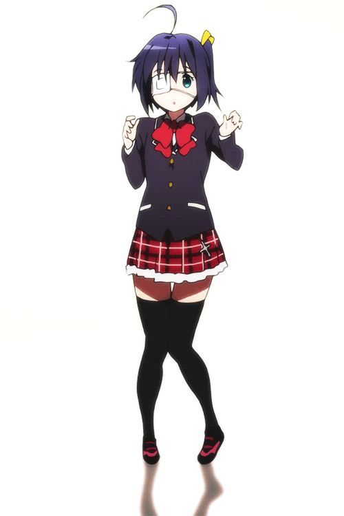

Telurines
Telurines adalah kumpulan barang-barang serbaguna yang dibuat oleh Xi.

Situs ini masih dalam tahap pembangunan.
Terimakasih.
o
Telurines adalah kumpulan barang-barang serbaguna yang dibuat oleh Xi.